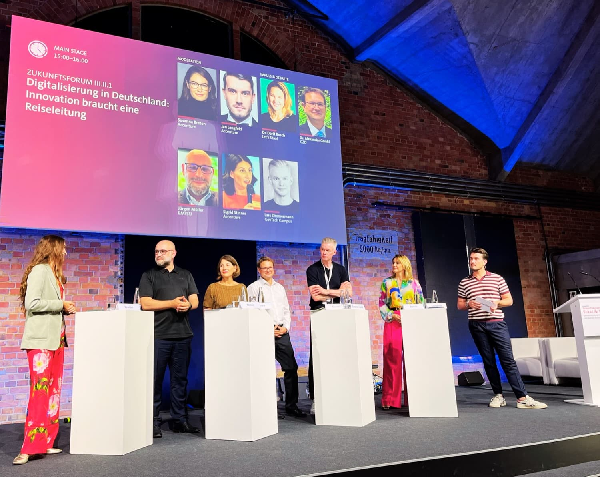

Gewachsene Komplexität wird zu klaren Verantwortlichkeiten und belastbarem Reporting, sodass Entscheidungen schneller fallen und im Alltag tragen.
Ausgangslage
Wenn Organisationen wachsen, fusionieren oder sich neu aufstellen, entstehen schnell Strukturen, die niemand mehr ganz überblickt. Zuständigkeiten überschneiden sich, Entscheidungen bleiben liegen, und Abläufe, die einmal sinnvoll waren, bremsen heute den Alltag.
Vorgehen
Wir schaffen die organisatorische Basis, auf der ein Unternehmen wieder verlässlich arbeitet und entscheidet:
- Prozesse analysieren und neu strukturieren
- Rollen und Schnittstellen klären
- ein Berichtswesen aufbauen, das Führung wirklich steuern lässt

Wir übersetzen gewachsene Komplexität in klare Verantwortlichkeiten.
Ergebnis
In unseren Projekten übersetzen wir gewachsene Komplexität in klare Verantwortlichkeiten und ein belastbares Reporting, sodass Entscheidungen schneller fallen und im Alltag tragen.
← Zurück zu Cases